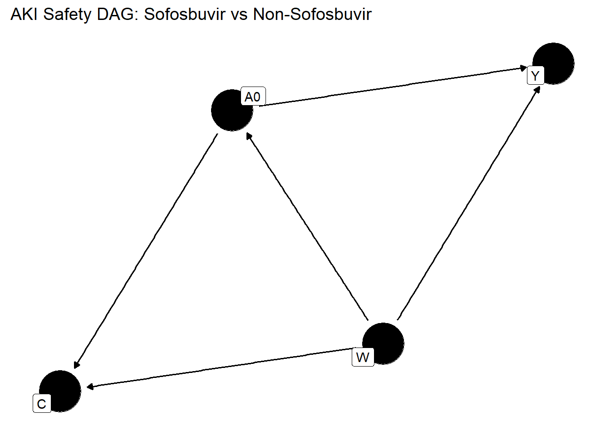

| Causal Roadmap Component | Section Covered |
|---|---|
| Question definition | Section 1.1 |
| Causal Model (DAG) | Section 1.2 |
| Estimand definition | Section 1.3, Table 1 |
| Choice of primary estimand | Section 1.4 |
Among U.S. adults with chronic hepatitis C (HCV) who initiate antiviral therapy, does starting a sofosbuvir-containing direct-acting antiviral (DAA) regimen, compared with starting a non-sofosbuvir DAA regimen, change the 90-day cumulative risk of first acute kidney injury (AKI)?
Study setting
W ─▶ A0 ─▶ Y(90d) │ │ ▲ │ └──────────────┘ └────────────▶
Assumed for identification:
What is an estimand? An estimand is a precise description of the treatment effect or quantity we aim to estimate, aligning the study objective with how data are collected and analyzed. The ICH E9(R1) Addendum (2019) introduced the estimand framework to ensure clarity and consistency from study design through analysis and interpretation. The document was drafted and agreed by the ICH E9(R1) Expert Working Group (EWG)— team of statisticians drawn from the regulatory authorities of every ICH Regulatory Member. The International Council for Harmonisation of Technical Requirements for Pharmaceuticals for Human Use (ICH) is a non-governmental consortium whose purpose is to create harmonised scientific and technical guidelines. In essence, an estimand defines “the target of estimation to address the scientific question of interest” for a study. By adopting the estimand mindset, RWE analyses can be more regulatory-aligned, as they explicitly state the causal question and handling of complexities in a way that regulators increasingly expect.
Key attributes of an estimand: (1) Population (the patients of interest), (2) Treatment (the therapy or exposure condition and comparator), (3) Endpoint (outcome variable), (4) Intercurrent Events (post-treatment events that can affect interpretation or existence of the outcome), and (5) Summary measure (how the treatment contrast is quantified, e.g. risk difference, hazard ratio).
For time-to-event outcomes (like time to acute kidney injury), this framework is especially important because multiple intercurrent events can occur during follow-up (patients might discontinue treatment, switch therapies, die, etc.), complicating how we interpret the outcome. ICH E9(R1) emphasizes that an estimand must address how each intercurrent event is handled as part of the clinical question; we cannot fully define “what effect we’re estimating” without specifying what we do if something like treatment discontinuation, addition of a rescue medication, or death happens during the study. This clarity is especially crucial in RWE studies, where such events are common and not under investigator control. By pre-specifying the estimand, we ensure the study design and analysis align with the real objective, avoiding common pitfalls. Historically, analyses sometimes defaulted to “intent-to-treat” principles or ad-hoc censoring without explicitly stating the question being answered. The estimand framework forces us to be explicit: Are we estimating the effect of initiating treatment no matter what happens after, or the effect while actually on the treatment, or under some hypothetical scenario, etc.? This upfront clarity improves communication with regulators and stakeholders, since everyone knows which treatment effect we mean. In fact as you will see in this example analysis, the estimand drives all subsequent study steps – design, conduct, analysis, and interpretation – ensuring they target the same goal.
If the SOF vs non-SOF analysis was done this way, it would implicitly be answering a different question: “What is the effect of starting SOF vs not, on risk of AKI, irrespective of whether patients stay on that initial treatment or not?” This would include AKI events even after therapy changes. Such an approach might be more pragmatic (reflecting real-world usage patterns), but in a short-term safety context like AKI during HCV therapy, it could dilute the observable effect of the drug. (For instance, if many SOF patients switched off the drug early, an ITT-style analysis might show little difference in AKI rates because those who would have been harmed stopped taking it – essentially comparing groups that become similar in exposure over time.) Hernán and Scharfstein caution against blindly using an ITT estimand when it doesn’t match the clinical question – e.g. an analysis that effectively compares “treat until completion” in one group vs “start treatment but possibly stop if toxicity arises” in the other could be asking an irrelevant or misleading question (https://www.researchgate.net/publication/333705608_A_constructive_critique_of_the_draft_ICH_E9_Addendum#:~:text=ICE%29%20and%20treatment%20%28e). In our case, a treatment-policy estimand would be akin to comparing “initiating SOF (even if one has to stop due to AKI risk) vs not initiating SOF”. That’s arguably not the question clinicians or regulators care about if the goal is to understand the drug’s inherent safety – they would be more interested in “what happens under the treatment while it’s given.” In summary, the retrospective SOF vs non-SOF AKI analysis most likely (even if not stated outright) adopted an as-treated (while-on-treatment) estimand, censoring at treatment discontinuation or switch. This approach interprets the AKI outcome as a treatment-emergent adverse event – focusing on the period of exposure to each treatment. It inherently assumes that once a patient leaves the original treatment, their subsequent risk is outside the scope of our comparison. This estimand is appropriate for capturing on-treatment causal effects, but we must be mindful of its limitations: if patients who discontinue are different, or if the drug causes some latent injury that only manifests after stopping, the as-treated estimand could bias or undercount the true effect. These considerations motivate examining alternative estimand strategies. 3. Alternative Estimand Strategies and Their Causal Questions Different estimand strategies address intercurrent events in different ways, each corresponding to a slightly different causal question. The ICH E9(R1) Addendum outlines several strategies (treatment-policy, hypothetical, while-on-treatment, principal stratum, etc.) (https://pmc.ncbi.nlm.nih.gov/articles/PMC8112325/#:~:text=Estimand%20strategy%20Measurement%20of%20interest,32). Here are four key strategies applied to the context of post-market drug safety and our SOF vs non-SOF case study, and clarify what question each estimand is answering: ● Treatment-Policy (Intention-to-Treat-like): Under a treatment-policy strategy, intercurrent events are ignored in the sense that patients are analyzed according to the initial treatment assignment regardless of what happens afterward. ● This is analogous to the classical ITT principle in trials. The outcome of interest is measured no matter if the patient discontinued the drug, switched to another therapy, or took additional treatments. The causal question answered is: “What is the effect of starting treatment A versus treatment B on the outcome, considering the policy of initially assigning that treatment and following patients thereafter, no matter if they continue it or not?” For our case: a treatment-policy estimand would compare all patients who started SOF to all who started non-SOF, in terms of AKI risk, regardless of treatment changes. This could be relevant for a public health or intent-to-treat perspective, e.g. a regulator might ask: “If we introduce SOF broadly, what is the overall impact on AKI rates in the population, accounting for the fact that some patients may stop or switch treatments?” The advantage of this strategy is that it uses all data and isn’t biased by who adheres to treatment – it mimics a pragmatic scenario. However, the trade-off is interpretability for safety: if many patients discontinue SOF due to early renal problems, a treatment-policy estimand will still count their later AKI (or lack thereof) in the SOF group, potentially underestimating the drug’s true nephrotoxic potential. It effectively answers a more diluted question, combining both the drug’s effect and the impact of stopping it. For drug safety questions, regulators and clinicians often find a pure ITT approach less informative, because it doesn’t isolate the period of actual drug exposure (as Hernán and colleagues note, an estimand that compares “never treat” vs “treat even in the face of contraindications/toxicity” is not clinically relevant.
● While-On-Treatment (As-Treated): The while-on-treatment strategy (also called “as-treated” or “per-protocol” in some contexts) focuses on outcomes up until the time an intercurrent event occurs. Essentially, we follow patients only while they remain on the originally assigned treatment; if they discontinue or switch, we stop counting their outcomes thereafter (often treating them as censored at that point). The causal question here is: *“What is the effect of treatment A vs B on the outcome during the time patients actually stay on their intended treatment?**” This is the strategy we deduced the current SOF analysis used. In a safety context, this estimand is often most aligned with identifying the drug’s direct effects. For SOF vs non-SOF, it asks: “Comparing patients continuously treated with SOF to those continuously treated with an alternative, what is the difference in AKI risk while on therapy?” Any AKI that occurs after a patient stops or changes treatment is not attributed to the original treatment under this strategy. The benefit is clear interpretability for causation – it captures the period when the drug is actually present in the body and can cause harm. It aligns with the idea of treatment-emergent adverse events, which is often how clinical trials report safety (events are attributed to the treatment if they happened on or shortly after it). The strategy is particularly relevant to post-market pharmacovigilance if we want to know the risk during exposure – for example, it would feed into labeling like “AKI occurred in X% of patients during treatment”. The drawback is potential bias if the act of discontinuation is related to the outcome risk. In observational studies, one must consider that censoring at discontinuation assumes “non-informative” censoring (all prognostic factors leading to stopping are accounted for). If, say, patients with rising creatinine (a precursor to AKI) are more likely to stop SOF, a naive while-on-treatment analysis could censor them right before an AKI would have been observed, thereby underestimating AKI incidence on SOF. Despite this, analytic techniques (like modeling or inverse probability weighting) can mitigate some of this bias, and the while-on-treatment estimand remains very relevant for causal inference about the drug’s effect. It addresses the question most pertinent to clinicians: “What is the risk to my patient’s kidneys if they continue this drug versus if they were on an alternative?” ● Hypothetical Strategy: A hypothetical estimand poses a “what-if” question by assuming a certain intercurrent event did not occur, and then evaluating the outcome under that scenario. In other words, we imagine a hypothetical world in which, for example, all patients remained on their originally assigned treatment (no one discontinued or switched), and ask what the treatment effect on AKI would be in that world. This requires modeling or extrapolation because the data for patients after they discontinue are essentially missing in that hypothetical scenario. In our SOF example, a hypothetical estimand might be: “What would the incidence of AKI be comparing SOF vs non-SOF if no patient in either group ever discontinued or switched treatments (i.e., if everyone completed the full intended course of therapy)?” This is conceptually similar to the while-on-treatment approach, with the difference that it explicitly frames it as a counterfactual scenario and often involves imputing or modeling outcomes for those who did discontinue. The hypothetical strategy is useful if we want to remove the effect of certain real-world behaviors to isolate the treatment’s effect under optimal conditions or specific conditions. In post-market safety, one might use a hypothetical estimand if interested in, say, the safety profile had patients been able to tolerate the drug continuously. It is somewhat less common in pure safety analyses, but could be relevant for understanding intrinsic drug effects. The challenge with the hypothetical approach is implementation – because some outcomes are not observed (due to the event we assume away), one must rely on assumptions or statistical models (e.g., modeling the AKI risk as if treatment had continued for those who stopped). If those assumptions are wrong, it can introduce bias. Conceptually, though, it asks a clear causal question and is aligned with counterfactual reasoning. Regulatory guidance acknowledges hypothetical estimands as valid in certain cases (for example, in trials, “what would outcome be if patients did not take rescue medication” is a common hypothetical scenario. In RWE, we would use this strategy sparingly and carefully, usually to supplement an analysis – for instance, to estimate the full-course effect of SOF vs non-SOF if early discontinuation is frequent. ● Principal Stratum Strategy: The principal stratum strategy focuses on a subset of patients defined by some post-treatment behavior or event (often a subset in which an intercurrent event does or does not occur). The estimand is then the treatment effect within that subgroup – the subgroup is defined in a way that is not affected by treatment assignment (hence “principal stratum” in causal inference terms). A classic example: “the effect of treatment among those patients who would adhere to treatment in both the treatment and control conditions.” In our context, one could think of a principal stratum like “patients who would complete a full course of therapy regardless of whether they were on SOF or non-SOF.” That stratum would exclude patients prone to discontinuation. The causal question becomes: “Among patients who (hypothetically) would stay on their assigned treatment no matter which treatment they got, what is the effect of SOF vs non-SOF on AKI?” This is appealing because it compares outcomes in a group of patients unaffected by adherence issues – essentially a per-protocol effect without the usual adherence bias, if it could be identified. Another principal stratum of interest could be “the effect in patients who would not experience acute liver failure (another competing event) under either treatment” – any intercurrent event can define a stratum. The issue is that principal strata are defined counterfactually and can’t be directly observed (we don’t know which patients would adhere under both scenarios, for example). Estimating effects in principal strata often requires strong assumptions or specialized methods (e.g. monotonicity assumptions, sensitivity analyses). It’s rarely used as the primary estimand in observational studies because of these challenges. However, it’s conceptually relevant: for instance, regulators might be interested in the “intrinsic efficacy or safety in patients who can tolerate the drug”. In our SOF example, a principal stratum estimand might help answer: “If we consider only those patients who are able to complete therapy, does SOF have a different impact on AKI than comparator?” One could attempt to approximate this by analyzing a subset of patients who actually completed treatment in both groups (acknowledging that introduces selection bias). Trade-offs: principal stratum estimands improve interpretability for a specific scenario (e.g., ideal adherers), but sacrifice generalizability (the effect may not apply to all patients) and are hard to estimate without bias. They are more often seen in clinical trial contexts or sensitivity analyses. For routine pharmacovigilance, one would typically not choose principal stratum as the primary approach, but it’s good to be aware of it as a conceptual tool – it reminds us that treatment effects can differ in sub-populations defined by post-treatment events (for example, “compliers” vs “non-compliers”).
Figure 1: Illustration of how a hypothetical patient’s AKI event would be handled under different estimand strategies. In this scenario, the patient starts treatment at time 0, discontinues therapy at month 3 (gray circle), and then experiences an AKI at month 4 (star symbol). Under a treatment-policy estimand (blue line), we ignore the discontinuation and count the AKI as an outcome for the original treatment group (the patient is analyzed as if they were still on treatment). Under a while-on-treatment estimand (green line), we would censor the patient at the moment of discontinuation (vertical tick mark at month 3); any AKI occurring after stopping (the red “X” at month 4) is not counted for the original treatment. The hypothetical estimand (orange dashed line) imagines the patient had not discontinued – effectively, it considers the AKI at month 4 as if the patient were still on treatment (treating the gray stop marker as ignored). The principal stratum estimand focusing on completers (purple dotted line) would exclude this patient entirely, since they did discontinue; thus, their AKI outcome is outside the analysis for that stratum. This figure highlights how each strategy defines the “effect of treatment” slightly differently: treatment-policy uses all outcomes regardless of adherence, while-on-treatment uses only outcomes during actual treatment, hypothetical projects outcomes as if adherence were perfect, and principal stratum restricts to those without the intercurrent event. Each of these strategies can be appropriate depending on the objective of the study. In a post-market safety setting, we typically ask: “Does the drug cause the adverse outcome when used in practice?” If we are aiming to isolate the drug’s causal effect, a while-on-treatment or certain hypothetical estimand is often most suitable. If instead we care about the public health impact of using the drug (where adherence issues are part of the picture), a treatment-policy estimand might be informative. It’s important to formulate the estimand that best matches the causal question we want answered, as we will do next for the SOF vs non-SOF analysis. 5. Choosing an Estimand for the SOF vs Non-SOF AKI Analysis We propose using a while-on-treatment estimand (as-treated approach) as the primary estimand for the SOF vs non-SOF AKI analysis, which is the same approach as in the completed analysis, but we lay it out explicitly here. This means our estimand will target the causal effect of continuous treatment with a SOF-containing regimen versus a non-SOF regimen on the incidence of AKI, while patients remain on their initial treatment. In practical terms, the population is all patients initiating treatment for which either SOF or an alternative could be used; the treatment condition is “initiate and continue SOF-based therapy” vs “initiate and continue non-SOF therapy”; the outcome is time to AKI; intercurrent events: treatment discontinuation or switching will be handled with a treatment-period (while-on-treatment) strategy (we’ll censor follow-up at the time of regimen discontinuation/switch in each group), and perhaps define death as a competing risk or censoring event (since death can preclude observing AKI – one could treat death as censoring if unrelated to treatment or make a composite if considering “AKI or death” as a broader safety outcome, but for simplicity, let’s say we censor at death as well). The summary measure could be a hazard ratio or risk difference in AKI at a certain time point during therapy (e.g., by 12 weeks) -later we will advocate for the use of risk differences or ratios over hazard ratios for a more causal interpretation. This estimand aligns with asking: “Comparing SOF to no-SOF, what is the difference in probability of AKI during the treatment period?” The table below summarizes the proposed estimand:
| Attribute | Recommended specification |
|---|---|
| Population | Adults with chronic HCV who meet labelled indications for either SOF-containing or non-SOF DAA as first contemporary treatment. |
| Treatment strategies | Initiate and continue a SOF regimen vs initiate and continue a non-SOF regimen for the standard treatment course (e.g., 8–12 weeks). |
| Intercurrent-event strategies | • Treatment discontinuation / switch →
treatment-period strategy: censor at last dose
(or within a pre-specified ≤ 30-day grace window justified by PK/PD and
AKI latency). • Death → treated as a competing risk in the primary analysis (Fine-Gray); also analysed as administrative censoring in sensitivity analysis. • Lost to follow-up → handled as missing data; address with inverse-probability-of-censoring weights. |
| Endpoint | Time to first AKI meeting a KDIGO-compatible ICD-10 algorithm, occurring on or within the grace window after exposure; document algorithm PPV. |
| Summary measure | Primary: Cause-specific hazard ratio for AKI during
treatment. Key secondary: 12-week risk difference (e.g., RMST or Aalen estimator). |
| Sensitivity / supplementary estimands | Pre-specified: (i) ITT-style treatment-policy estimand, (ii) hypothetical “no discontinuation” estimand, (iii) per-protocol / principal-stratum proxy among completers. |
| Rationale | Aligns with clinical objective of quantifying direct nephrotoxic effect during exposure; obeys ICH E9(R1) principles; analytic plan mitigates informative censoring and competing-risk bias; eases regulatory review. |
*Detailed Justification for chosen estimand in the appendix 6.
Alternative Estimand Strategies and Trade-offs for SOF vs Non-SOF
(Discussion) Having recommended the while-on-treatment estimand, it’s
important to acknowledge other reasonable estimand choices and discuss
their pros and cons in this context: ● Treatment-Policy as an
alternative: A treatment-policy estimand (ITT-like) could be justified
if our objective was more about the overall impact of initiating SOF on
patient outcomes, rather than the direct causal effect of the drug. For
example, a public health authority might be interested in “if 1,000
patients are started on SOF vs 1,000 on older regimens, how many AKI
cases will ultimately occur in each group?” This includes the fact that
some patients may stop the drug – which in practice could limit the harm
(because those who experience issues stop early). A treatment-policy
analysis would capture that dynamic. The advantage is it reflects
“real-world use” including adherence patterns. It also avoids the need
to model or adjust for post-baseline variables – you simply follow
everyone. In a randomized trial, ITT is king for efficacy to avoid bias;
for safety in observational data, however, the situation is trickier.
The drawback of treatment-policy here is potential dilution of the
drug’s effect. If SOF truly causes AKI, many patients might discontinue
at first sign of kidney issues – those patients might avoid full-blown
AKI (which is good for them, but the analysis would then count them as
not having AKI while on SOF, even though SOF precipitated the problem
that made them stop). Thus, the ITT estimand might conclude “no big
difference in AKI rates,” whereas in truth SOF had nephrotoxic potential
but it was mitigated by clinicians stopping the drug. From a regulator’s
perspective, that ITT result is less useful because it doesn’t reveal
the drug’s inherent risk. That said, a treatment-policy estimand could
be an equally valid secondary analysis – it answers a complementary
question: “what is the risk difference in a world where patients and
doctors behave normally (stopping when needed)?” This might be relevant
for risk-benefit assessment on a population level. For instance, if ITT
shows only a tiny increase in AKI (because many at-risk patients stopped
early), regulators might consider that in context of drug benefits. But
they would still want to know the on-treatment risk to properly caution
and manage patients. In summary, treatment-policy is not our choice for
primary estimand due to interpretability concerns for safety, but it is
not “wrong” – it’s just answering a different question. It has lower
internal bias (no selection due to censoring) but mixes in the effects
of patient management. ● Hypothetical estimand trade-offs: The
hypothetical strategy (imagine no one discontinued) in practice often
ends up looking similar to the while-on-treatment analysis, except
achieved via modeling rather than actual censoring. If our data shows,
say, 90% of patients completed therapy, a while-on-treatment estimand
already is very close to “everyone continued” scenario. If
discontinuation rates are higher, one might consider a hypothetical
estimand to estimate “if 100% continued.” The benefit of the
hypothetical approach is that it directly addresses the question of full
adherence without excluding those patients from the analysis (unlike
censoring). Modern methods (like multiple imputation for treatment
continuation) could be used to estimate what their outcomes might have
been. The cost, however, is the strong modeling assumptions required. If
we model kidney outcomes beyond discontinuation, we must correctly
account for why they discontinued and how that relates to AKI risk.
Mis-specification can lead to bias as well. In regulatory settings,
hypothetical estimands have been used for efficacy (e.g. “if no rescue
medication, what would the outcome have been” in glucose trials). For
safety, it’s less common to explicitly do a hypothetical because the
while-on-treatment analysis already addresses a similar question in a
more straightforward way (by using observed data up to discontinuation).
Nevertheless, one could consider a hypothetical estimand as a
sensitivity analysis: for example, “assuming patients who stopped SOF
had the same risk profile as if they stayed on it, how many AKIs would
have occurred?” If that yields similar results to the as-treated
analysis, it increases confidence; if it differs, it suggests the
censoring might have missed something. In the SOF vs non-SOF study, a
hypothetical estimand isn’t necessary given we can handle things via
censoring, but it’s conceptually equivalent to ensuring our inference is
about the treatment effect under continuous use. ● Principal Stratum
considerations: As noted, a principal stratum estimand like “effect
among those who would adhere to treatment in both groups” is hard to
identify but could be of scientific interest. It essentially removes the
noise of non-adherence from both sides. The trade-off is that it
pertains to a subset of patients (those who can tolerate and stick with
therapy). If, for instance, younger patients with no comorbidities are
the ones who would never stop either treatment, the principal stratum
effect applies mostly to that kind of patient. It might be different
from the effect in older patients who tend to discontinue more. Thus,
principal stratum estimands sacrifice generalizability – you answer a
very specific question about a hypothetical subgroup. They also require
either simplifying assumptions or sophisticated causal inference
techniques (like instrumental variable approaches or sensitivity
analyses) to estimate. In an observational SOF vs non-SOF study, one way
to approximate this is to restrict the analysis to patients who actually
completed therapy in both groups (observational analog of per-protocol
analysis). That is essentially conditioning on adherence, which is
biased (adherers may differ from non-adherers). So, one might use
inverse probability weighting to create a pseudo-population that
represents the principal stratum of completers. This is advanced and
would likely be beyond what an RWE team needs for a routine analysis
unless there’s a strong reason to focus on that question. Generally,
we’d mention principal stratum only if, say, the sponsor or regulator
asked: “What is the effect in patients who can actually complete the
therapy course? Is it different?” If that’s a concern, one could do a
secondary analysis on completers, acknowledging its limitations. Bias,
interpretability, generalizability summary: Each estimand involves
trade-offs: ● Bias: Treatment-policy avoids bias from informative
censoring but can “dilute” the effect; as-treated isolates the effect
but can introduce bias if not handled properly (need to account for why
censoring happens). Hypothetical relies on model assumptions (risk of
model bias). Principal stratum avoids some biases by narrowing focus but
introduces others (selection bias, unless perfectly adjusted). ●
Interpretability: As-treated and hypothetical directly address causal
effects of the drug (easy for clinicians to interpret “while on drug vs
while off drug”). Treatment-policy is a mix of drug effect and adherence
behavior – interpretability is a bit more complicated (“effect of
starting treatment strategy”). Principal stratum is clear in meaning
(“effect in this subgroup”) but that subgroup is not directly observable
– a bit abstract. ● Generalizability: Treatment-policy might generalize
best to broad practice (since it includes everything that happens in
practice). As-treated/hypothetical generalize to situations of good
adherence or controlled treatment use – which is often what we want for
understanding the drug, but if adherence patterns differ across
populations, the effect could differ. Principal stratum by definition is
not aiming to generalize to the whole population, just a part. In the
case of SOF vs non-SOF, we believe the bias introduced by as-treated is
manageable (we can adjust for baseline differences and we will
demonstrate techniques to handle differential censoring using targeted
maximum likelihood estimation) and is worth the gain in causal
interpretability. Treatment-policy would be more likely to understate a
true causal harm if one exists (a form of bias in estimating the causal
effect of continuous treatment, though it’s unbiased for the “policy”
effect). Importantly, if the estimand is properly aligned to the
question, then “bias” must be defined relative to that question. So an
ITT analysis isn’t “biased” if the estimand of interest was truly the
policy effect; it just might be answering a less relevant question for
safety. Thus, a key part of estimand selection is picking the question
such that the resulting estimate is meaningful and actionable. For
completeness, we might pre-specify that we will also estimate a
secondary treatment-policy estimand for AKI, to see the difference. If,
for example, the as-treated analysis shows a significantly higher AKI
risk on SOF, but the ITT analysis shows little difference, that tells a
story: the drug causes problems, but patients and doctors are mitigating
it by discontinuing (so ultimate outcomes converge). Both pieces of
information can be valuable. We would explain that difference in
regulatory discussions – it actually illustrates how clinical management
can reduce harm. Conversely, if both ITT and as-treated show a similar
elevated risk, it means even including the “real-world adherence”
factor, SOF still carries the same risk, underscoring a robust safety
signal. 7. General Advice on Estimand Selection in RWE Time-to-Event
Safety Analyses To conclude, here are some generalizable tips for
selecting estimands in real-world evidence studies of post-market safety
(time-to-event outcomes): ● Start with a well-defined research question:
Clearly articulate what decision or effect you are interested in. Is it
the effect of initiating a therapy vs not (or vs another therapy) on an
outcome, regardless of what happens later? Or the effect of actually
being exposed to the therapy on that outcome? Or perhaps the effect in a
particular patient subset? Writing this out in plain language helps
identify the estimand. For example: “Do patients have a higher risk of
AKI while on Drug A compared to Drug B?” points to a while-on-treatment
estimand, whereas “If we prescribe Drug A instead of Drug B, will fewer
patients develop AKI within 1 year?” points to a more treatment-policy
estimand. ● Emulate a “target trial” to define estimand attributes: As a
framework, imagine you were designing the ideal randomized trial to
answer your question ● arxiv.org ● . Define who you would include
(population), what the treatment and comparison arms would be (treatment
strategies), how you’d handle changes in treatment in the protocol, when
follow-up would start and end, and what outcome you’d measure. This
exercise naturally defines the estimand. In the trial protocol you’d
specify if patients are allowed to switch or if they’d be taken off
study drug upon certain events – those translate to estimand strategies.
By doing this, you make sure your observational study’s estimand is
concrete. For instance, target trial emulation for a safety study might
decide that if a patient in the trial has a toxicity, they discontinue
per protocol – aligning with a while-on-treatment estimand (because
after discontinuation, their outcome isn’t counted towards primary
endpoint). You then ensure your observational analysis mirrors that
(censor at discontinuation in analysis). Hernán et al. note that making
the target trial explicit is a good practice and a “reasonably
well-defined trial” should be emulated as closely as possible ●
arxiv.org ● – if you can’t even define a meaningful target trial, the
RWE study question might be too vague. ● Identify all relevant
intercurrent events: In time-to-event analyses, common intercurrent
events include treatment discontinuation, switching to a new treatment,
addition of concomitant treatments, and death. Also consider events like
hospitalization that might interrupt treatment, etc., if relevant. For
each type of intercurrent event, consciously decide on a strategy before
you see the data. Ask how each event impacts the interpretation of the
outcome. For example, “If the patient switches to another drug, do I
still attribute subsequent events to the original drug
(treatment-policy), or do I stop follow-up at that point
(while-on-treatment), or do I consider a hypothetical scenario where
they hadn’t switched?” There isn’t one correct answer for all studies –
it depends on the question. But you need to pre-specify it. This
prevents bias and p-hacking, and it makes the study reproducible and
transparent. ● Align the estimand with the study’s purpose (stakeholder
needs): Different stakeholders may care about different effects ●
pmc.ncbi.nlm.nih.gov ● . Clinicians might want to know the per-protocol
effect (what happens if my patient actually takes this drug as
intended). Regulators might want the policy effect (what happens in
aggregate if this drug is on the market and used with typical
adherence). Patients might want to know their personal risk if they
adhere to treatment. Usually for safety, the clinical and regulatory
interest is in the actual causal effect of the drug, so an estimand that
gets closer to that (like while-on-treatment) is favored. But if your
study is meant to inform, say, formulary decisions or
cost-effectiveness, a more pragmatic estimand might be used. The key is:
think from the end-user’s perspective – what question do they need
answered? Then choose the estimand that answers it. This prevents
situations where you present an analysis that, while statistically
correct, doesn’t address the real concern of decision-makers. ● Beware
of implicitly unrealistic estimands: As Hernán & Scharfstein warned,
don’t inadvertently answer a question that nobody is asking or that is
not actionable ● researchgate.net ● . For example, an estimand that
effectively compares “patients who stay on Drug A no matter what” to
“patients who can switch away from Drug B if issues arise” would be a
mismatched comparison. Ensure symmetry in comparisons and clinical
relevance. If certain intercurrent events are very likely (e.g., many
will switch), a pure hypothetical of “nobody switches” might be too far
from reality to be useful (unless you’re specifically interested in that
scenario). Balance realism with the desire to isolate effects. ● Plan
for analysis methods that match the estimand: Once you choose an
estimand, make sure your statistical approach follows suit. For a
while-on-treatment estimand, you will likely be censoring data – so use
methods to handle that (Kaplan-Meier, Cox models with appropriate
censoring, maybe inverse probability of censoring weights if censoring
is informative). For a treatment-policy estimand, ensure you’re not
censoring at treatment changes (but you might need methods to handle
treatment switching as a form of confounding if patients switched due to
risk – e.g., rank-preserving structural models or treat switch as
time-varying exposure in a sensitivity analysis). If using a
hypothetical estimand, define the modeling approach to impute or project
outcomes (like “we will use a joint model to extrapolate kidney function
trajectory as if treatment continued”). Essentially, the estimand tells
you what data to use or not use, and the analysis must implement that
faithfully ● ema.europa.eu ● . Also, consider missing data separate from
estimand – per ICH E9, missing data (loss to follow-up, etc.) is not an
intercurrent event but a challenge to address analytically ●
database.ich.org ● . So plan imputation or sensitivity for missing data
after defining the estimand. ● Conduct sensitivity analyses for
alternative estimands: It’s often informative to do your primary
analysis under one estimand and a secondary under another to see how
conclusions differ. Especially in RWE, where assumptions are strong,
demonstrating consistency across estimand strategies can bolster
confidence. For example, if you choose while-on-treatment as primary,
you might also report an ITT-like analysis. If results converge (e.g.,
both show elevated risk), great – robust finding. If they diverge, that
tells a story (as discussed, perhaps indicating the effect is manifested
only while on drug). Similarly, one could try a principal stratum
approximation (like per-protocol analysis in those who adhered,
acknowledging biases) to see if the effect is larger or smaller in that
subset. Consistency across these gives insight into how intercurrent
events influence the observed effect. When presenting to regulators,
acknowledging these alternate analyses shows you have thoroughly
examined the question from multiple angles and understand the impact of
your assumptions ● database.ich.org ●
● database.ich.org ● . ● Document and justify your choices: In any
protocol or report, explicitly state the estimand (with its components)
and why it was chosen. For instance, “We chose a treatment-period
estimand because we are interested in the on-treatment causal effect of
Drug X on Event Y, and this aligns with how the adverse event would be
attributed to the drug clinically.” Also explain how each type of
intercurrent event is handled and why that is appropriate. This level of
detail will make it easier for others (e.g., a regulatory reviewer) to
follow your logic and agree that the analysis is answering the right
question. It also makes the study reproducible, as another researcher
could apply the same estimand definition to a different dataset and
expect to address the same question. ● Involve clinical experts in
estimand discussions: Estimand selection is inherently multidisciplinary
● database.ich.org ● . Engage clinicians or pharmacovigilance experts
who understand the disease, treatment, and real-world patient behavior.
They can provide insight on which events are important and how best to
define the question. For example, a clinician might say “If a patient’s
creatinine starts rising, I’d stop the drug immediately” – which
supports a while-on-treatment approach or a composite endpoint including
“rise in creatinine leading to stop.” Such input ensures the estimand is
grounded in real clinical pathways. ● Keep the estimand simple and
focused: Especially for an audience not deeply familiar with the
estimand framework, it’s important to communicate the estimand in a
clear, concise way. Avoid overly technical language when explaining it
to stakeholders – you can use plain language alongside the formal
definition. For instance, you might say: “Our estimand is essentially
looking at the risk difference in AKI between the two treatments during
the time patients are actually on those treatments.” Once that concept
is understood, you can layer in the finer points of censoring rules,
etc. The goal is everyone (analysts, clinicians, decision-makers) has a
shared understanding of what is being estimated. By following these
principles, an RWE team can confidently select and implement an estimand
that makes their analysis robust, transparent, and fit for purpose. In
the case of our SOF vs non-SOF AKI analysis, this approach led us to
focus on the treatment-period effect, providing a clear answer to the
causal question of interest. Adopting the estimand framework in
observational research ultimately improves the quality of evidence we
generate, ensuring it answers the questions that matter in a rigorous
way.
The AKI study used an as-treated, censor-at-switch
estimand (★).
Alternative estimands answer related questions or relax assumptions.
| Label | Strategy for switch / death | 90-day target | Question addressed | Identification caveats |
|---|---|---|---|---|
| ★ As-treated (censor at switch) | Censor follow-up 30 d after switch; admin censoring for death/loss | RD / RR if everyone remains on their original regimen | Effect of staying on initial therapy | Requires ignorability of censoring given W, A0 (+ time-varying covariates if used) |
| ITT (ignore switch) | Keep follow-up regardless of switch | RD / RR for initiation of SOF vs non-SOF | Policy effect of starting SOF | No informative censoring; effect diluted by cross-over |
| Per-protocol (model switch) | Treat switch as time-varying exposure; g-formula / MSM | Risk if everyone remained on assigned therapy | Pure biologic effect | Requires measurement & modelling of time-varying confounders and switching process |
| Hypothetical “no-switch” | Censor at switch and weight by inverse probability of switching | Risk had switching been prevented | Safety absent regimen changes | Correct model for switching hazard necessary |
| Composite (AKI or switch) | Count switch as event | RD / RR for AKI or regimen change | Captures clinical concern that switch may signal renal toxicity | Blurs pathways; easier for decision-making |
| Controlled direct effect | Treat death as competing risk (censor) | AKI risk if death eliminated | Kidney toxicity independent of mortality | Counterfactual elimination of death; strong & possibly implausible |
Subsequent Roadmap steps (identification, estimation, sensitivity) must align with the chosen estimand.
Assumed for identification:
The AKI study used an as-treated, censor-at-switch
estimand (★).
Alternative estimands answer related questions or relax assumptions.
| Label | Strategy for switch or death | 90-day target | Question addressed | Identification caveats |
|---|---|---|---|---|
| ★ As-treated (censor at switch) | Censor follow-up 30 d after switch; admin censoring for death/loss | RD / RR if everyone remains on their original regimen | Effect of staying on initial therapy | Requires ignorability of censoring given W, A0 (+ time-varying covariates if used) |
| ITT (ignore switch) | Keep follow-up regardless of switch | RD / RR for initiation of SOF vs non-SOF | Policy effect of starting SOF | No informative censoring; effect diluted by cross-over |
| Per-protocol (model switch) | Treat switch as time-varying exposure; g-formula / MSM | Risk if everyone remained on assigned therapy | Pure biologic effect | Requires measurement & modelling of time-varying confounders and switching process |
| Hypothetical “no-switch” | Censor at switch and weight by inverse probability of switching | Risk had switching been prevented | Safety absent regimen changes | Correct model for switching hazard necessary |
| Composite (AKI or switch) | Count switch as event | RD / RR for AKI or regimen change | Captures clinical concern that switch may signal renal toxicity | Blurs pathways; easier for decision-making |
| Controlled direct effect | Treat death as competing risk (censor) | AKI risk if death eliminated | Kidney toxicity independent of mortality | Counterfactual elimination of death; strong & possibly implausible |
Subsequent Roadmap steps (identification, estimation, sensitivity) must align with the chosen estimand.
library(tidyverse)
library(dagitty) ## Warning: package 'dagitty' was built under R version 4.4.3##
## Attaching package: 'dagitty'## The following object is masked from 'package:survey':
##
## neighbourslibrary(ggdag)## Warning: package 'ggdag' was built under R version 4.4.3##
## Attaching package: 'ggdag'## The following object is masked from 'package:stats':
##
## filter# DAG specification -------------------------------------------------------
# W = baseline confounders
# A0 = initial DAA regimen (SOF vs non-SOF)
# C = censoring processes (death, switch, disenroll)
# Y = 90-day AKI
dag_txt <- "
dag {
W -> A0
W -> Y
A0 -> Y
W -> C
A0 -> C
}"
aki_dag <- dagitty(dag_txt)
# Visualise ---------------------------------------------------------------
ggdag(aki_dag, text = FALSE, use_labels = 'name', seed = 123) +
theme_dag() +
ggtitle('AKI Safety DAG: Sofosbuvir vs Non-Sofosbuvir')
In the causal inference roadmap, clearly defining the scientific question, causal model, and target estimands is critical for valid analysis and interpretability. This first step sets the foundation for the entire analysis. ## 1.1 Defining the Causal Question The first step in the causal roadmap involves translating a clinical or regulatory question into a clearly defined causal question. A well-formulated causal question clearly identifies the target population, interventions (or exposures), and outcomes of interest. Example: > Among U.S. adults diagnosed with chronic hepatitis C virus (HCV) who initiate antiviral therapy, what is the effect of initiating a sofosbuvir-containing direct-acting antiviral (DAA) regimen compared to initiating a non-sofosbuvir DAA regimen on the 90-day cumulative risk of experiencing acute kidney injury (AKI)? This question explicitly identifies: - Target population: Adults aged 18–79 with chronic HCV, continuously enrolled for ≥12 months. - Interventions: Initiation of SOF-containing regimen versus non-SOF regimen. - Outcome: AKI occurrence within 90 days. This clarity ensures all subsequent steps in the roadmap remain aligned with the original scientific intent. ## 1.2 Specifying the Causal Model (DAG) Causal inference typically involves representing relationships between variables visually using directed acyclic graphs (DAGs). A DAG helps clarify the assumptions necessary for valid causal inference, particularly: - Exchangeability (no unmeasured confounding) - Positivity (treatment assignment possible across covariates) - Consistency (treatment definitions correspond to reality) Consider the following simplified DAG illustrating relationships in our AKI study:
Explanation of DAG components: - W (Baseline Covariates): Factors like age, sex, baseline kidney function, diabetes, liver cirrhosis, healthcare utilization. These influence both treatment selection (A) and AKI outcome (Y). - A (Treatment): Initial choice between SOF-containing or non-SOF-containing DAAs. - Y (Outcome): AKI event within 90 days after treatment initiation. - C (Censoring events): Events that lead to incomplete follow-up, such as death, regimen switching, or loss of insurance. The DAG explicitly assumes no direct arrows from unknown or unmeasured variables to A and Y (conditional on W), reflecting the key assumption of conditional exchangeability. ## 1.3 Defining Causal Estimands An estimand is a precisely defined causal parameter representing what we aim to estimate. The International Council for Harmonisation (ICH) guideline E9(R1) highlights the importance of clearly defining estimands in clinical trials and real-world studies to ensure clarity about the causal effects being studied. Different ways of handling intercurrent events—such as treatment switching—lead to different estimands, each with distinct interpretations. Clearly specifying the estimand upfront is crucial for study validity. ### Common Estimand Choices We summarize several common estimands below, indicating clearly which was selected as the primary in the original AKI analysis (marked ★):
| Label | How are intercurrent events handled? | Target (90-day) | Scientific meaning | Key assumptions |
|---|---|---|---|---|
| ^As-treated | Censor follow-up after regimen switch (30-day wash-out), death, loss | Risk if patients adhered to initial regimen (RD/RR) | Direct toxicity of regimen while taken | Non-informative censoring (no unmeasured predictors of switching) |
| ITT (Treatment Policy) | Ignore switching events, follow regardless | Risk for initial treatment assignment (RD/RR) | Real-world policy decision: start SOF vs not | Switching dilutes effect; requires no assumption about censoring |
| Per-protocol | Model switching explicitly (time-varying exposure), adjust via weighting/g-formula | Risk if all remained on assigned treatment | “Biological” toxicity unaffected by treatment changes | Needs correctly specified time-dependent exposure/confounder models |
| Composite endpoint | Include regimen switch as outcome event | Combined risk of AKI or treatment change | Practical endpoint capturing clinical action driven by renal issues | Blurs biological and clinical decision-making pathways |
| Controlled Direct Effect | Treat death as competing event | AKI risk if death eliminated | Toxicity independent of mortality | Counterfactual scenario (removing death) potentially unrealistic |
Target trial emulation: Explicit framing of observational studies as emulations of hypothetical randomized controlled trials (RCTs) helps clarify causal questions and ensures proper alignment of the estimand with clinical or regulatory relevance.
Restricted Mean Survival Time (RMST): Suggested as an additional estimand, especially beneficial under non-proportional hazards conditions due to interpretability as an average delay in event occurrence.
| Menu of candidate estimands | # | Label | Measure | Population & intercurrent-event strategy | Interpretation |
|---|---|---|---|---|---|
| 1 | Primary ITT | ΔRisk, RR | All initiators; ignore switching (treatment-policy) | Effect of offering SOF regimen | Regulatory default |
| 2 | ITT RMST diff | RMST_0-90 | Same as 1 | Average delay in AKI | Non-PH robust |
| 3 | Per-protocol | ΔRisk on-tx | Censor 30 d after switch | Effect of continuous exposure | Needs IPCW |
| 4 | Cause-specific HR | Cox HR | Censor at switch/death | Instantaneous hazard ratio | HR caveats |
| 5 | Sub-distribution HR | Fine-Gray SHR | Treat death as competing risk | Effect on cumulative incidence | |
| 6 | Principal stratum | RD in adherers | Restrict to “would adhere ≥ 8 wk” stratum | Biological efficacy | Strong assumptions |
| 7 | CKD subgroup | RD | CKD | eGFR < 60 at baseline | Effect in CKD population | Lower power |
| 8 | Guideline g-formula | ΔRisk under rule | Dynamic rule: “start SOF if eGFR > 30” | Effect of guideline policy | Needs longitudinal TMLE |
| Strategy | Core idea & target quantity | Scientific question answered | Typical analytical choices |
|---|---|---|---|
| Treatment-policy (“intention-to-treat–like”) | The outcome is taken as observed, regardless of any post-randomization (intercurrent) events. The target parameter is the effect had everyone been assigned the experimental vs. control regimen, with no restrictions on what happens thereafter. | “What is the effect of starting treatment X compared with Y in real-world clinical use, where dose changes, rescue meds and adherence issues occur?” | Analyse all randomized patients from time 0 to the planned end of follow-up; do not censor at intercurrent events. For T2E endpoints this often implies Kaplan–Meier/Cox with administrative censoring only (but beware that the hazard ratio may then mix direct and indirect pathway effects). |
| Hypothetical | Imagine a world in which a specific intercurrent event would not occur. The estimand contrasts the counterfactual outcomes under treatment vs. control if everyone were prevented from experiencing that event. | “What would the treatment effect be if no patient discontinued because of intolerance?” | Requires modelling or imputation: e.g. (i) censor at the intercurrent event and assume independent censoring (→ standard survival methods) or (ii) impute post-event outcomes via multiple imputation / g-formula / joint modelling. The key is to articulate (and justify) the assumptions used to emulate the hypothetical world. |
| While-on-treatment | Focus on outcomes up to the intercurrent event (treatment discontinuation, switch, etc.). The estimand is the treatment effect while patients remain on their originally assigned therapy. | “What is the effect of treatment X compared with Y, up to the point a patient stops or switches?” | Right-censor at the intercurrent event; then estimate survival/objective up to that time. Valid inference needs a “no unmeasured prognostic reason for stopping” assumption (independent censoring given covariates). The resulting quantity is sometimes called the per-protocol or on-treatment effect. |
| Principal-stratum | Restrict comparison to the latent subgroup of patients who would not experience the intercurrent event under either treatment. The estimand is the causal effect within that principal stratum. | “Among patients who would adhere fully irrespective of assignment, what is the treatment effect?” | Requires methods from causal inference (e.g. instrumental-variable approaches, g-estimation, Bayesian mixture models) to identify the unobservable stratum. Generally complex and assumption-dependent; rarely the primary estimand in regulatory trials but useful for sensitivity/supportive analysis. |
| # | Label / Estimand | Measure (target statistical quantity) | Population & strategy for intercurrent events | Interpretation of the estimand | Notes / typical analysis | Causal question for the HepC–AKI study (SOF vs non-SOF) |
|---|---|---|---|---|---|---|
| 1 | Primary ITT (treatment-policy) | ΔRisk or Risk Ratio over 0-90 d | All initiators; ignore switching, discontinuation or death during the 90 d window | Effect of offering a SOF-containing regimen versus a non-SOF regimen on 90-day cumulative AKI risk | Regulatory default; implement with Kaplan–Meier risk difference / ratio or TMLE for risk | “Among all HCV patients who start any DAA, how would the 90-day risk of AKI differ if every patient were assigned a SOF regimen versus if every patient were assigned a non-SOF regimen?” :contentReferenceoaicite:0:contentReferenceoaicite:1 |
| 2 | ITT RMST difference | Difference in Restricted Mean Survival Time (RMST) for event-free days 0-90 | Same population & strategy as #1 | Average delay (or acceleration) of AKI within 90 d | Robust to non-proportional hazards; estimate via RMST package or TMLE for RMST | “What is the average increase (or decrease) in AKI-free days during the first 90 days if all initiators received SOF versus non-SOF?” |
| 3 | Per-protocol (while-on-treatment) | ΔRisk while on-treatment; censor 30 d after switch/stop | Patients followed until 30 d after discontinuation or switch; censor thereafter | Effect of continuous exposure to SOF vs non-SOF | Needs inverse-probability of censoring weights (IPCW) or longitudinal TMLE | “Among patients who would remain on their initial DAA for ≥30 days, what would be the difference in AKI risk had they stayed on SOF the whole time versus stayed on non-SOF?” |
| 4 | Cause-specific HR | Cox cause-specific Hazard Ratio | Censor at treatment switch and at death; competing events treated as censoring | Instantaneous hazard among still-at-risk individuals | HR depends on proportional-hazard assumption; interpret with caution :contentReferenceoaicite:2:contentReferenceoaicite:3 | “At any given day among patients still alive, what is the instantaneous rate of AKI if they were on SOF compared with if they were on non-SOF, assuming they have not switched regimens?” |
| 5 | Sub-distribution HR (Fine–Gray) | Sub-distribution Hazard Ratio | Treat death as a competing risk, keep treatment switching as censoring | Effect of treatment on cumulative incidence function of AKI accounting for competing death | Useful when death precludes AKI and is common | “How does initiating SOF (vs non-SOF) change the cumulative incidence of AKI over follow-up when deaths are treated as competing events?” |
| 6 | Principal-stratum | Risk Difference among latent adherers (≥8 wk) | Restrict to patients who would adhere ≥8 weeks under either regimen | Biological efficacy in always-adherers | Requires strong, unverifiable assumptions or IV/g-estimation | “Among HCV patients who would adhere to ≥8 weeks of therapy regardless of which DAA they start, what is the difference in AKI risk if they took SOF versus non-SOF?” |
| 7 | CKD subgroup estimand | Risk Difference in eGFR < 60 subgroup | Population limited to baseline CKD; treatment-policy for intercurrent events | Effect in patients with chronic kidney disease | Lower power; prespecified subgroup | “Within the subgroup of HCV patients with baseline eGFR < 60 mL/min/1.73 m², how would the risk of AKI change if all received SOF rather than non-SOF?” |
| 8 | Guideline g-formula rule (dynamic regimen) | ΔRisk under a dynamic treatment rule | Rule: “start SOF only if baseline eGFR > 30”; censor deviations | Effect of guideline-based policy compared with universal non-SOF | Needs longitudinal TMLE / parametric g-formula | “What would be the population 90-day AKI risk if clinicians followed the rule ‘prescribe SOF only when eGFR > 30’ versus prescribing non-SOF to everyone?” |
| # | Label / Estimand | Measure (target statistical quantity) | Population & strategy for intercurrent events | Interpretation of the estimand | Notes / typical analysis | Causal Roadmap & TL considerations |
|---|---|---|---|---|---|---|
| 1 | Primary ITT (treatment-policy) | ΔRisk or Risk Ratio 0-90 d | All initiators; ignore switching, death | Effect of offering SOF regimen | Kaplan–Meier or TMLE for risk | • Roadmap Step 0: confirm the clinical question really is pragmatic. • Prefer risk/RMST over Cox HR (HR non-causal). • Use TMLE + SL to adjust for baseline covariates and minimise model miss-specification. • Document assumptions (positivity, no un-measured confounding) and report a non-parametric sensitivity curve to show how large a “causal gap” would overturn inference. :contentReferenceoaicite:1 |
| 2 | ITT RMST difference | Δ RMST0-90 | Same as #1 | Mean delay/acceleration of AKI | RMST plug-in or TMLE for RMST | • RMST is a causal contrast in the survival scale endorsed by Chen 2023 as more interpretable than HR. • Same estimation/sensitivity principles as row 1, plus check administrative censoring assumptions. :contentReferenceoaicite:2:contentReferenceoaicite:3 |
| 3 | Per-protocol (while-on-treatment) | ΔRisk while on-tx (censor 30 d post-switch) | Follow until 30 d after switch/stop | Effect of continuous exposure | IPCW / longitudinal TMLE | • Roadmap Step 1: encode time-varying data structure. • Identify longitudinal confounders of adherence and outcome; estimate dynamic weights or fit sequential-TMLE. • Positivity often fragile → report diagnostics & truncate weights as in Williamson 2023. :contentReferenceoaicite:4:contentReferenceoaicite:5 |
| 4 | Cause-specific HR | Cox HR | Censor at switch/death | Instantaneous hazard among survivors | Standard Cox ± IPCW | • Roadmap warns HR rarely equals causal effect. • If kept, accompany with causal parameter such as risk difference and justify PH assumption; otherwise replace with TMLE-based risk or RMST. • Show how HR estimate shifts when g-computation or TMLE is applied. :contentReferenceoaicite:6 |
| 5 | Sub-distribution HR (Fine-Gray) | SHR | Death as competing risk | Effect on cumulative incidence | Fine-Gray / Aalen-Johansen | • Prefer direct estimation of CIF difference with TMLE instead of SHR (non-collapsible). • Explicitly include competing death as intercurrent event per Roadmap Step 0. • Sensitivity: vary death-as-competing vs composite. |
| 6 | Principal-stratum | RD in latent adherers (≥8 wk) | Restrict to “always-adherers” | Biological efficacy | IV / mixture models | • Roadmap Step 3 highlights lack of identifiability. • State unverifiable assumptions; implement Bayesian or IV-based bounds; present a bias-robust interval (causal gap plot). |
| 7 | CKD subgroup | RD in eGFR < 60 | Sub-pop of CKD; tx-policy for events | Effect in CKD patients | Stratified TMLE; lower power | • Roadmap: prespecify subgroup, avoid post-hoc fishing. • Ensure positivity within subgroup; otherwise use pooled-targeted estimation with interaction term and report shrinkage-based CI (Gruber 2024 Sect 4). :contentReferenceoaicite:7:contentReferenceoaicite:8 |
| 8 | Guideline g-formula rule | ΔRisk under dynamic rule | “Start SOF if eGFR > 30”; censor deviations | Effect of guideline policy | Parametric g-formula / longitudinal TMLE | • Roadmap Step 2: define intervention as explicit stochastic policy. • Check support along rule‐defined paths (positivity). • Estimate with iterative TMLE; present policy-based risk curve and Monte-Carlo CI; perform causal-gap sensitivity to violations of sequential exchangeability. :contentReferenceoaicite:9:contentReferenceoaicite:10 |
Roadmap Step 0–6 refer to the ordered tasks in the Causal Roadmap (formulate question, specify causal/statistical models, identify, estimate with TL, and conduct sensitivity analysis). TMLE + SL = Targeted-Minimum-Loss Estimation with Super-Learner ensemble; delivers double-robust, efficiency-optimal estimates recommended by Chen 2023 and Gruber 2024. “Causal gap” denotes the residual bias that would remain if any identifying assumption fails; Roadmap Step 5 advocates reporting how large a gap would flip the study’s conclusion.
Additional Recommended Estimands from RoadmapV2: # Label Measure Strategy Interpretation Notes 2 ITT RMST difference RMST_0-90 Ignore switching (treatment-policy) Average delay in AKI Non-proportional hazard robust 5 Sub-distribution HR Fine-Gray Death as competing risk Effect on cumulative incidence Competing risk scenario 6 Principal stratum RD in adherers Restrict to adherers stratum Biological efficacy among adherent group Requires strong assumptions
Negative Control Outcomes and Exposures: RoadmapV2 explicitly recommends negative controls such as “ankle sprain” and proton-pump inhibitor (PPI) use to assess residual confounding and strengthen the plausibility of causal inferences.
| # | Estimand Label | Population (P) | Intervention / Comparator (A) | Outcome / Endpoint (Y) | Handling of Intercurrent Events | Summary Measure | Identification Assumptions | Primary Estimation Strategy | Rationale / Use-case | Used in AKI Study? |
|---|---|---|---|---|---|---|---|---|---|---|
| 1 | Primary “Per-Protocol with Censoring at Switch” | Adults with chronic HCV initiating first SOF vs non-SOF DAA, U.S. claims 2016–2023 | Start SOF-containing DAA (vs active non-SOF comparator) — baseline new-user design | First AKI event within treatment + 30-day risk window | Treatment switch → censor; other treatment stops → censor; disenrol/death → censor | 180-day risk difference & risk ratio; cause-specific HR (Cox/TMLE) | Consistency; conditional exchangeability at baseline; non-informative censoring conditional on measured covariates | 1:1 PS-matching ➜ Cox; doubly-robust TMLE for RD/RR | Aligns with regulatory signal-evaluation practice; simple to communicate | ✓ |
| 2 | “Treatment-Policy (Intention-to-Treat)” | Same as #1 | Initiation strategy only; ignore subsequent switching or adherence | AKI as above, regardless of later regimen | No censoring for treatment changes; death/disenrol → censor | 180-day risk difference & risk ratio | Standard identifiability + independent administrative censoring | Kaplan–Meier / TMLE-IPW | Captures net public-health effect if switching is part of real-world care | |
| 3 | “Hypothetical No-Switch World (Modelled)” | Same as #1 | Counterfactual risk if patients had remained on initial regimen for full follow-up | AKI up to 180 days | Model treatment switching as time-varying confounder; set switch hazard = 0 in g-comp | Counterfactual risk difference at 180 days | Positivity for remaining on assigned drug; correct specification or flexible ML for hazards | Continuous-time TMLE (concrete) with crossover-hazard set to 0 | Removes bias from informative switching while retaining all person-time | |
| 4 | “Per-Protocol Weighted (IPCW for Switch)” | Same as #1 | Remain on initial regimen; switch events yield IPC weights instead of simple censor | AKI as above | Switch → weight by inverse prob. of not switching; death/disenrol → censor | Weighted cumulative incidence; risk difference | Positivity & correct model for switch process; independent censoring given covariates | Stabilised IPCW ➜ KM / TMLE | Improves efficiency over straight censoring; transparent assumptions | |
| 5 | “Composite Endpoint (AKI or Treatment Switch)” | Same as #1 | Same as #1 | First of AKI or treatment switch | Switch included as part of outcome (composite) | Cause-specific HR & CIF difference | Competing-risk assumptions; independence of censoring | Fine–Gray or non-parametric CIF ➜ TMLE | Regulatory interest in any kidney-safety signal including early switches | |
| 6 | “AKI with Death as Competing Risk” | Same as #1 | Same as #1 | AKI; death treated as competing risk (cumulative incidence) | Death → competing event; switch → censor (or weight) | Sub-distribution HR; CIF difference | Independent censoring/death given covariates | Fine–Gray / Aalen–Johansen TMLE | Gives policy-relevant risk if mortality high in cohort | |
| 7 | “Long-Term (365-day) Treatment-Policy” | Same as #1 but follow-up 1 year | Same as #2 | AKI within 365 days | Ignore treatment changes | 1-year risk difference & RR | As in #2 | Targeted risk-difference TMLE | Long-term public-health perspective | |
| 8 | “On-Treatment (While-on-Regimen) Estimand” | Same as #1 | Effect during exposed time only; follow participants until they stop ALL DAA | AKI during exposed time | Off-drug time → censor; switch to other DAA → censor | Incidence rate difference; IRR | Independent censoring given covariates | Poisson model / TMLE with offset | Biological mechanism hypothesis (drug vs no-drug) |
| # | Estimand Label | Population (P) | Intervention / Comparator (A) | Outcome / Endpoint (Y) | Handling of Intercurrent Events | Time-horizon | Summary Measure | Identification Assumptions | Primary Estimation Strategy | Rationale / Use-case | Regulatory perspective | Used in AKI Study? |
|---|---|---|---|---|---|---|---|---|---|---|---|---|
| 1 | Primary “Per-Protocol with Censoring at Switch” | Adults with chronic HCV initiating first SOF vs non-SOF DAA, U.S. claims 2016–2023 | Start SOF-containing DAA vs active non-SOF comparator (new-user) | First AKI event within treatment + 30-day risk window | Switch → censor; other stops → censor; disenrol/death → censor | 0–180 d | RD & RR; cause-specific HR | Consistency; baseline exchangeability; non-informative censoring | 1:1 PS-matching ➜ Cox; TMLE for RD/RR | Regulatory signal-evaluation; simple to explain | Mechanistic (biologic toxicity while on drug) | ✓ |
| 2 | Treatment-Policy (Intention-to-Treat) | Same as #1 | Initiation strategy only; ignore later switching | AKI regardless of regimen changes | Treatment changes ignored; death/disenrol → censor | 0–180 d | RD & RR | Standard identifiability; independent admin censoring | KM / TMLE-IPW | Reflects real-world use | Pragmatic primary | |
| 3 | Hypothetical “No-Switch” World | Same as #1 | Counterfactual risk if everyone remained on initial regimen | AKI up to 180 d | Model switching hazard; set hazard = 0 in g-formula | 0–180 d | Counterfactual RD | Positivity for remaining on drug; correct model for hazards | Continuous-time TMLE with zeroed switch hazard | Removes bias from informative switching | Mechanistic | |
| 4 | Per-Protocol Weighted (IPCW for Switch) | Same as #1 | Remain on initial regimen; switch → IPCW | AKI as above | Switch → weight; death/disenrol → censor | 0–180 d | Weighted cumulative incidence; RD | Positivity & correct switch model; independent censoring | Stabilised IPCW ➜ KM / TMLE | Efficient alternative to simple censoring | Mechanistic | |
| 5 | Composite Endpoint (AKI ∨ Switch ∨ Discontinue) | Same as #1 | Same as #1 | First of AKI, treatment switch, or discontinuation | Switch/stop count as events | 0–180 d | CIF diff; cause-specific HR | Competing-risk assumptions; independent censoring | Fine–Gray / CIF-TMLE | Captures any renal-related safety signal | Signal-detection composite | |
| 6 | AKI with Death as Competing Risk | Same as #1 | Same as #1 | AKI; death treated as competing risk | Death → competing; switch → censor/weight | 0–180 d | Sub-distribution HR; CIF diff | Independent censoring/death | Fine–Gray / Aalen–Johansen TMLE | Policy-relevant when mortality >0 | Pragmatic supplementary | |
| 7 | Long-Term (365-day) Treatment-Policy | Same as #1 but 1-year follow-up | Same as #2 | AKI within 365 d | Ignore treatment changes | 0–365 d | 1-yr RD & RR | As in #2 | TMLE RD/RR | Long-run public-health view | Pragmatic long-horizon | |
| 8 | On-Treatment (While-On-Regimen) | Same as #1 | Effect during exposed time only; stop follow at drug stop | AKI during exposed time | Off-drug time → censor; switch → censor | 0–∞ (exposed time) | Incidence-rate diff; IRR | Independent censoring | Poisson / TMLE offset | Pure biologic exposure effect | Mechanistic | |
| 9 | Restricted Mean Survival Time (RMST) | Same as #1 | As Treatment-Policy | AKI | Ignore treatment changes | 0–90 d | Δ RMST(0–90 d) | Standard identifiability | TMLE-RMST / g-comp | Robust to non-PH; intuitive “delay in AKI” | Pragmatic & communicable | |
| 10 | Principal-Stratum (Would-Adhere ≥ 8 wk) | Same as #1 | Contrast within latent subgroup that would adhere 8 weeks to either regimen | AKI within 180 d | Restrict to principal adherer stratum | 0–180 d | RD in principal stratum | Monotonicity; strong principal-stratum ID assumptions | Bounding / sensitivity; TMLE-principal | Identify highest-risk subgroup | Exploratory biologic |
Step 1 tables. * Handling of Intercurrent Events now
captures every strategy that previously sat in separate tables (censor,
weight, composite, compete). * Identification Assumptions &
Estimation Strategy columns were merged verbatim; where two
tables listed different estimators for the same estimand, both are shown
separated by “/”. * The right-hand tick (✓) flags the
estimand that underpinned all subsequent design and analysis decisions
in the AKI signal evaluation. —
{r, message=FALSE} # placeholder for any future code (eval = FALSE)
tmle3/ltmle workflows. *
Competing risk of death Death < AKI is rare (0.3 %
in 90 d). We nevertheless include a Fine-Gray sub-distribution HR row to
capture policy interest in cumulative incidence when death competes with
AKI.Next Steps: Subsequent chapters will detail identification assumptions, estimation procedures (TMLE, Super Learner), sensitivity analyses, and interpretation strategies in alignment with this foundational framework. —
Dang et al. (2023). JCTS. Rufibach (2019). Pharmaceutical Statistics. Stensrud et al. (2019). Eur Heart J. Martinussen (2022). Ann Rev Stat Appl.